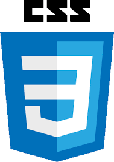

portfolio
Hello I'm
Surya S
And I'm a Frontend Developer |
A Frontend Developer is a professional who creates the part of a
website or web application
that users see and interact with directly. They focus on designing responsive, visually
appealing, and user-friendly interfaces using technologies like HTML, CSS, and JavaScript..


ABOUT
Hi, I'm Surya, a passionate Frontend Developer dedicated to creating clean, responsive, and interactive web applications. I specialize in HTML, CSS, JavaScript, and React, and I love turning creative ideas into real-world projects that provide seamless user experiences across all devices. My focus is on writing efficient, maintainable, and accessible code while continuously learning new technologies to grow as a developer. I believe that great websites combine design, functionality, and performance, and my goal is to deliver digital experiences that are both visually appealing and easy to use.
I am comfortable using modern tools and frameworks to build scalable projects. I always follow best coding practices and maintain clean, readable code. I like experimenting with animations, transitions, and interactive elements. I am motivated by challenges and enjoy solving complex problems with creative solutions I continuously learn new technologies to stay updated in the fast-changing web world. I am detail-oriented and ensure that every project I work on is polished and professional. I believe in building websites that are both functional and aesthetically appealing. I am passionate about turning ideas into digital products that can make a real impact.
SKILLS

90%

85%
PROJECTS
Hello I'm
Surya
My first project is an e-commerce website designed to provide a smooth and interactive online shopping experience. Users can easily browse products across multiple categories, with each product featuring detailed descriptions, images, and pricing information. Customers can add items to their shopping cart and manage their selections effortlessly. The website includes a secure checkout system to ensure safe and reliable transactions. I implemented a fully responsive design, making the website accessible on desktops, tablets, and mobile devices. User authentication
EDUCATION
My education has been journey of self-discovery ang growth.my
education details are as follows
Mary Immaculate Heart Matric Higher Sec School,Tiruvannamalai
SSLC-Xth(std)
2019-2020
Grade: 88%
I completed my 10th standard from a reputed school with good academic performance. During this time, I built a strong foundation in subjects like Mathematics, Science, and English. I actively participated in school activities and competitions, which helped me improve my confidence and communication skills. My teachers always encouraged me to perform better and supported my learning journey
Mary Immaculate Heart Matric Higher Sec School,Tiruvannamalai
HSC-XIIth(BIO-MATHS)
2021-2022
Grade: 80%
I completed my 12th standard from a well-known school with good academic results. It was a crucial stage in my education where I gained deeper knowledge in my chosen stream. I focused on understanding core subjects that helped me prepare for higher studies. During this time, I improved my analytical thinking and problem-solving skills. I also participated in various school events and group projects, which enhanced my teamwork and leadership abilities
Karan ARTS And Science College,Tiruvannamalai
BCA(Bachelor of Computer Applications)
2022-2025
Grade: 84%
I am currently pursuing my Bachelor of Computer Applications (BCA), where I have developed a strong interest in coding and software development. During my college journey, I learned various programming languages and enjoyed solving real-world problems through code. I actively participate in coding practice, mini-projects, and group assignments to improve my logical thinking and technical skills.
SLA Institute,KK nagar,Chennai
Full stack course
2025
I am also learning frontend development in an institute to strengthen my practical skills in web technologies. Through this course, I am gaining hands-on experience in HTML, CSS, and JavaScript, along with frameworks like Bootstrap and React. I’m learning how to design responsive and user-friendly websites that work smoothly on all devices. The institute provides practical training, live projects, and guidance from experienced mentors, which helps me understand real-world development processes.
CONTACT
I’m always excited to connect with new people and explore opportunities. Whether you have a project idea, a question, or just want to collaborate, feel free to reach out to me. You can contact me via email, phone, or social media, or simply send a message through the contact form below